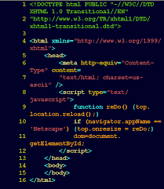

Що таке код
Код – це набір інструкцій (або правил), які можуть розуміти комп’ютери. Сотні різних мов програмування дозволяють нам створювати комп’ютерні програми, додатки, застосунки та веб-сайти. Замість того, щоб писати двійковий код, вони дозволяють нам писати код, який легко (відносно) писати, читати і розуміти. Кожна мова йде в комплекті зі спеціальною програмою, яка піклується про переведення того, що ми пишемо, в двійковий код.
Комп’ютери працюють з двійковим кодом, що складається з одиниць (1) і нулів (0), з яким людям дуже важко працювати.
Коротко про кодування
Якщо коротко, кодування – це написання коду, який вказує комп’ютеру, що потрібно робити, і що ви хочете від нього. А якщо більш детально, тоді ось розширена відповідь: комп’ютер може розуміти тільки два різних типи даних: включення і виключення. Грубо кажучи, комп’ютер – це просто набір перемикачів (транзисторів). Все, що може робити комп’ютер, — це вибирати унікальну комбінацію включених транзисторів і виключених транзисторів. Двійковий код є вираженням цих комбінацій у вигляді 1 і 0, де кожна цифра представляє один транзистор. Двійковий код згрупований в байти, групи з 8 цифр, які представляють 8 транзисторів. Наприклад, 10100110. Сучасні комп’ютери містять мільйони або навіть мільярди транзисторів, що означає неймовірно велику кількість таких комбінацій.
На даному етапі виникає одна невелика проблема. Щоб написати комп’ютерну програму, що складається з мільярдів одиниць і нулів, потрібні були б надлюдські розумові здібності, і на її написання знадобилося б не одне століття. Ось тут і з’являються мови програмування, які за допомогою коду «спілкуються» з комп’ютером.